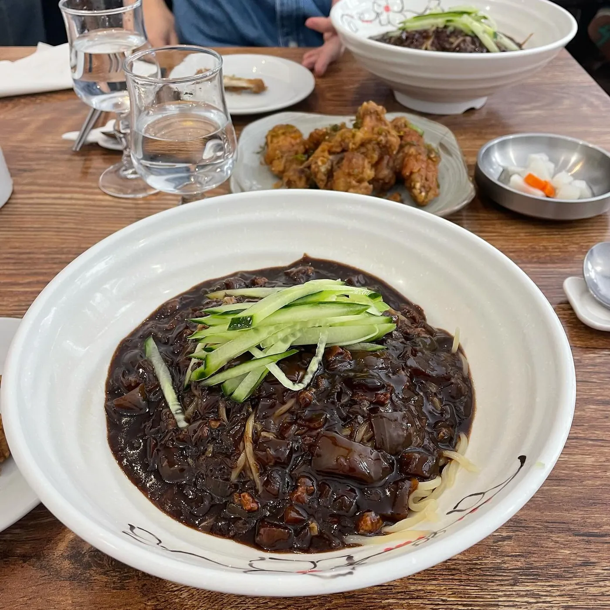
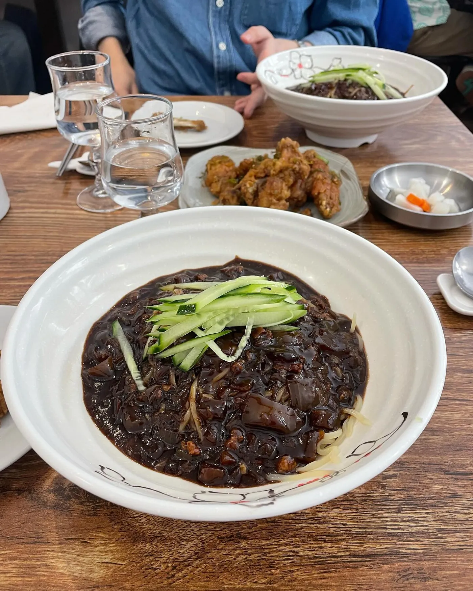
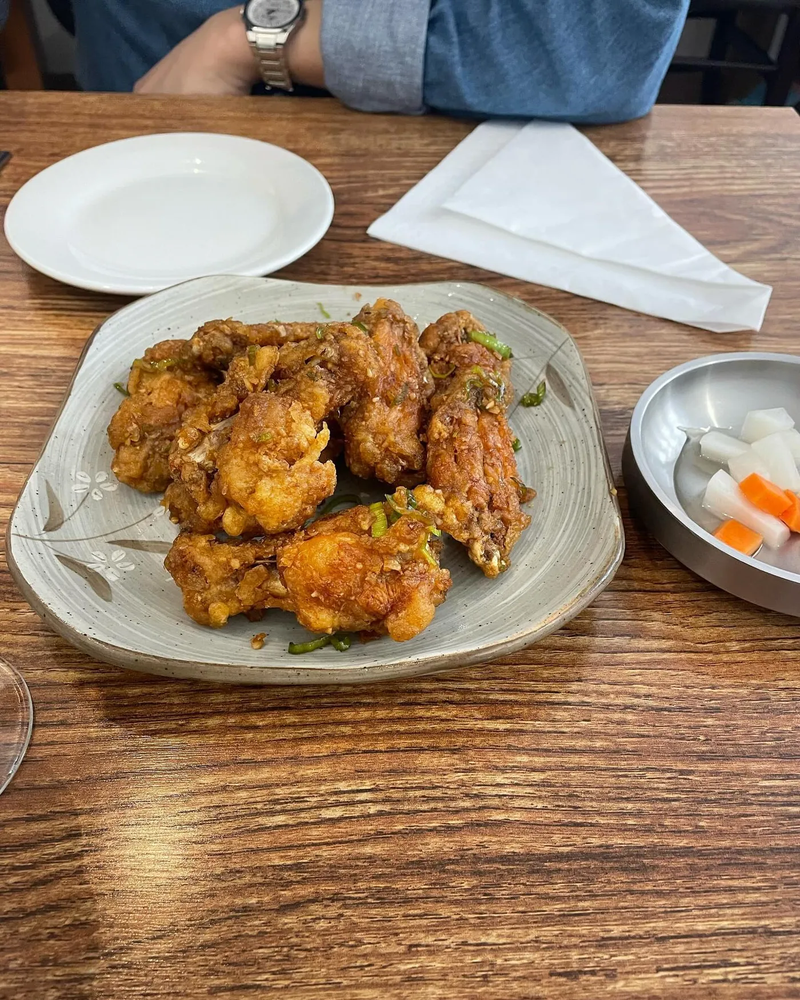

Paris, France · avril 2024
Bobae, le goût de la Corée dans le 13e
Le restaurant de Paris qui se rapproche le plus des saveurs que j'ai connues en Corée.



C'est le restaurant qui se rapproche le plus des saveurs de Corée, et un des meilleurs que j'ai découverts à Paris.
Sur la table : un jjajangmyeon, ses nouilles noyées sous la sauce aux haricots noirs et quelques bâtonnets de concombre, et une assiette de poulet frit coréen laqué de sauce sucrée-pimentée. Avec, les petits accompagnements qu'on retrouve dans tous les restaurants de jjajang en Corée.
Rien de chichiteux : des plats simples, généreux, qui ont le goût de ce qu'on mange là-bas. Compte environ 15 € par personne. Ma note : 4,7/5.
Bobae, « le trésor »
Bobae (보배) veut dire « trésor » en coréen. Un nom qui va bien à cette petite adresse du 13e arrondissement, que les amateurs de cuisine coréenne se passent de bouche à oreille.
Le jjajangmyeon, plat du quotidien
En Corée, le jjajangmyeon est le plat qu'on se fait livrer le jour d'un déménagement, qu'on mange après une remise de diplôme, et qu'on commande quand on ne sait pas quoi manger. Il se mélange vigoureusement avant de manger, pour que chaque nouille soit enrobée de sauce.
On le mange avec du danmuji, le radis jaune mariné, et des morceaux d'oignon cru à tremper dans la pâte de haricots noirs (chunjang).
Le poulet frit coréen
Le poulet frit coréen est frit deux fois, ce qui le rend très croustillant, puis souvent enrobé d'une sauce sucrée et pimentée : c'est le yangnyeom chikin. Avec une bière, il devient le chimaek, un vrai rituel du soir en Corée.
Ce qu'en disent les autres
Sur Tripadvisor, Bobae a une très bonne note, et plusieurs personnes le décrivent comme le meilleur restaurant coréen qu'elles ont essayé à Paris. Les prix raisonnables et le couple coréen qui tient le restaurant reviennent souvent.
Le revers : la salle est petite, le restaurant ne prend pas de réservations et il y a souvent la queue. Certains trouvent la décoration très simple : on vient ici pour l'assiette.
Résumé des avis publiés sur Tripadvisor, Restaurant Guru. Les prix et horaires peuvent avoir changé.
Le refaire chez toi
Les recettes du site pour retrouver ces goûts à la maison.
-
 Jjajangmyeon40 min
짜장면
Des nouilles nappées d'une sauce noire et brillante à la pâte de soja, au porc, au chou et à l'oignon. Le plat qu'on se fait livrer en Corée.
Version végétarienne : Des champignons et des pommes de terre à la place du porc.Version vegan : Des champignons et des pommes de terre à la place du porc.
Jjajangmyeon40 min
짜장면
Des nouilles nappées d'une sauce noire et brillante à la pâte de soja, au porc, au chou et à l'oignon. Le plat qu'on se fait livrer en Corée.
Version végétarienne : Des champignons et des pommes de terre à la place du porc.Version vegan : Des champignons et des pommes de terre à la place du porc.
-
 Poulet frit coréen (yangnyeom)1 h 10
양념치킨
Du poulet frit deux fois, très croustillant, enrobé d'une sauce rouge sucrée et légèrement piquante.
Version végétarienne : Le chou-fleur prend la place du poulet : même pâte, même double friture, même sauce.Version vegan : Le chou-fleur prend la place du poulet : même pâte, même double friture, même sauce.
Poulet frit coréen (yangnyeom)1 h 10
양념치킨
Du poulet frit deux fois, très croustillant, enrobé d'une sauce rouge sucrée et légèrement piquante.
Version végétarienne : Le chou-fleur prend la place du poulet : même pâte, même double friture, même sauce.Version vegan : Le chou-fleur prend la place du poulet : même pâte, même double friture, même sauce.